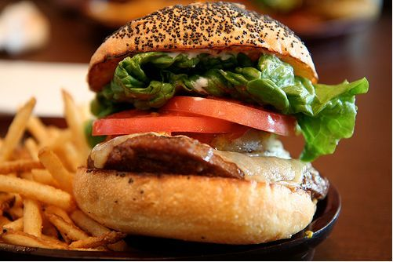
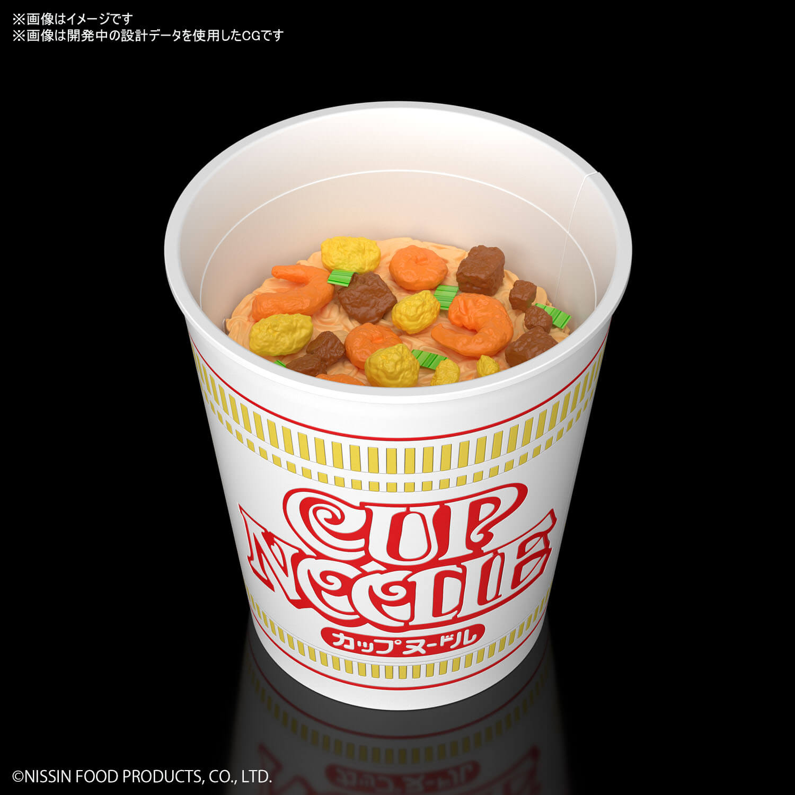
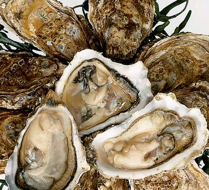

FOODS
ICE CREAM

Ice cream is a mixture of milk, cream, sugar, and sometimes other ingredients that has been frozen into a soft, creamy delight using special techniques. Ice cream has been a popular treat for hundreds of years but has only become commonplace since the widespread use of refrigeration.
PIZZA

Pizza is full of umami, which means “delicious” in Japanese. Just like the other types of taste, which are sweet, sour, salty, and bitter, umami is a rich and savory flavor that your taste buds taste and recognize.
HOTDOG

“Hot dog” means a whole, cured, cooked sausage that is skinless or stuffed in a casing, that may be known as a frankfurter, frank, furter, wiener, red hot, vienna, bologna, garlic bologna, or knockwurst, and that may be served in a bun or roll.
HUMBURGER
A hamburger is an extremely popular sandwich consisting of one or more meat patties placed in a bun or a bread roll. The meat is usually accompanied by various ingredients such as tomato slices, onions, pickles, or lettuce, and numerous condiments such as mayonnaise, ketchup, or salsa.
FRENCHFRIES

A thin strip of potato, usually cut 3 to 4 inches in length and about 1/4 to 3/8 inches square that are deep fried until they are golden brown and crisp textured on the outside while remaining white and soft on the inside. French fries are not French in origin. They are referred to as French because of the way they are cut. Very thin strips may be referred to as shoestring potatoes and thicker strips are called steak fries. In Britain, french fries are referred to as chips
CUP NOODLE
Cup noodles are precooked instant noodles with flavoring powder and/or seasoning sauce sold in a polystyrene, polyethylene, or paper cup.
PASTA

Pasta is a type of food made from a mixture of flour, eggs, and water that is formed into different shapes and then boiled. Spaghetti, macaroni, and noodles are types of pasta.
STEAK

A steak is a meat generally sliced across the muscle fibers, potentially including a bone. It is normally grilled, though it can also be pan-fried. Steak can also be cooked in sauce, such as in steak and kidney pie, or minced and formed into patties, such as hamburgers.
FRIED CHICKEN

Fried chicken, also known as Southern fried chicken, is a dish consisting of chicken pieces that have been coated with seasoned flour or batter and pan-fried, deep fried, pressure fried, or air fried.
OYSTER
Oyster shells are usually oval or pear-shaped, but will vary widely in form depending on what they attach to. They are generally whitish-gray in outer shell color, and their inside shell is usually a porcelain white. They have extremely strong adductor muscles to close their shells when threatened.